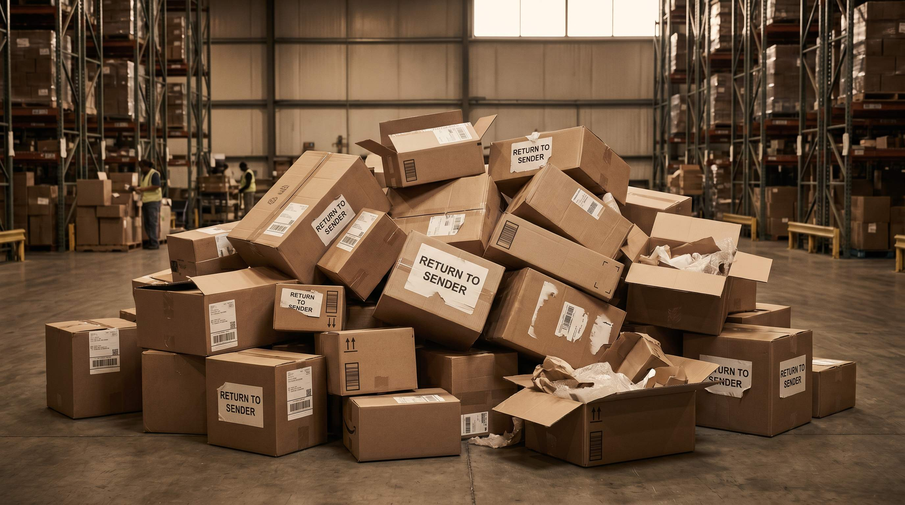

De fleste webshop-ejere kender deres samlede returrate. Faerre kender den opdelt på produkt, kategori og returarsag. Og endnu faerre ved hvad der er normalt for netop deres branche. Det er et problem, fordi en returrate på 18% kan være fremragende i mode og katastrofal i elektronik.
Returrate er en af de mest informationsrige metrics du har. Den fortaeller dig om dine produktbeskrivelser er præcise, om dine billeder er retvisende, om dine leverandoerværer matcher det lovede, og om din kundebase har de rigtige forventninger.
Denne artikel gennemgår branchebenchmarks, hvad en hoj returrate typisk signalerer, og hvad du skal gøre ved det.
👉 SmartPack giver dig returrate pr. produkt og kategori saa du kan identificere problemerne. Se systemet
Branchebenchmarks for returrate
| Branche | Normal returrate | Hoj (bekymrende) |
|---|---|---|
| Mode og beklardning | 20-35% | Over 40% |
| Sko | 25-40% | Over 45% |
| Elektronik og gadgets | 8-15% | Over 18% |
| Boligindretning | 10-20% | Over 25% |
| Boern og legetøj | 5-12% | Over 15% |
| Sport og fritid | 8-18% | Over 22% |
Brug disse tal som rettesnor. Hvis din returrate er markant over branchesnittet, er det et signal. Hvis den er under, er det et tegn på at dine produktbeskrivelser og billeder matcher virkeligheden.
Hvad en hoj returrate typisk signalerer
Returrate er et symptomal. For at forstå hvad det signalerer, skal du analysere returarsagerne. De fleste returneringer falder i et af disse spande:
- "Passede ikke" / "Forkert størrelse". Den hyppigste returarsag i mode og sko. Signalerer manglende størrelsesvejledning, ikke-standardiserede størrelsesskemaer eller produktbilleder der ikke viser passformen realistisk.
- "Ser anderledes ud end på billede". Produktbillederne er misvisende. For sterk filtrering, forkert farvegengivelse eller mangel på kontekst-billeder (sådan ser produktet ud i brug).
- "Ikke som beskrevet". Produktbeskrivelsen lover noget produktet ikke leverer. Materialekvalitet, maal, funktioner.
- "Forkert vare modtaget". Plukkefejl på lageret. En undskyldelig men kostbar fejl der koster dobbelt: returhajandtering og genafsendelse.
- "Kvaliteten lever ikke op til forventningerne". Prisfastsættelse eller kommunikation der skaber for hoj forventning relativt til produktets faktiske niveau.
Analyser returrate pr. produkt, ikke samlet
Den samlede returrate er et gennemsnit der skjuler outliers. Et enkelt produkt med 60% returrate kan trækkede snittet op, mens resten af sortimentet er sundt. Omvendt kan et problem der spreder sig på tvaers af kategorier være skjult i gennemsnittet.
Segmenter din returrate på minimum:
- Pr. produkt (find de største syndere)
- Pr. kategori (identificer strukturelle problemer)
- Pr. returarsag (find rodårsagen)
- Over tid (er den stigende, faldende eller stabil?)
De fleste webshops finder, at 10-20% af produkterne står for 50-60% af returneringerne. Det er indsatsen du skal fokusere på først.
Returomkostning: hvad koster din returrate dig
En retur er ikke gratis at håndtere. Typisk koster en retur:
- Returfragt: 28-60 kr. (afhængig af om du betaler det)
- Modtagelse og kontrol på lager: 15-35 kr.
- Genopretning (repackaging, kontrol, evt. nedskrivning): 10-40 kr.
- Refusionsbehandling og kundeservice: 10-25 kr.
Samlet: 60-160 kr. pr. retur. Er din returrate 20% og du sender 2.000 ordrer om maaneden, koster dine returneringer dig 400 ordrer gange 60-160 kr. Det er 24.000-64.000 kr. pr. maaned i returomkostninger. Selv en reduktion på 5 procentpoint er 10.000-20.000 kr. maanedligt.